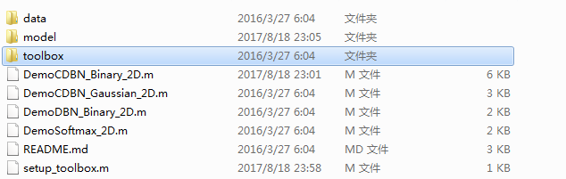
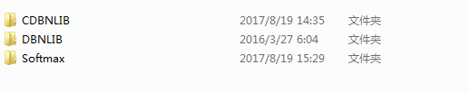
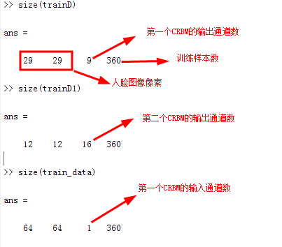
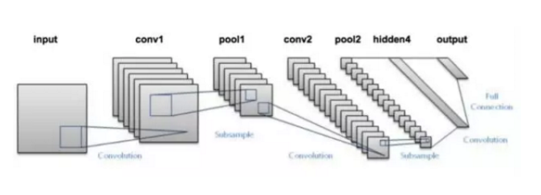
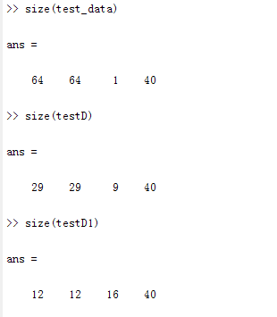
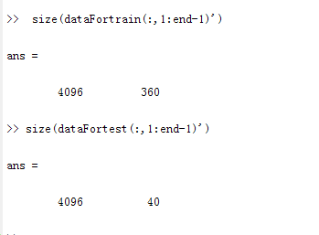
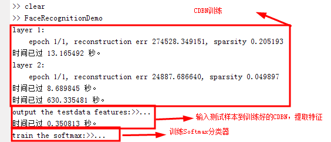
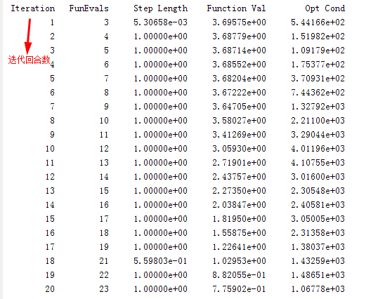
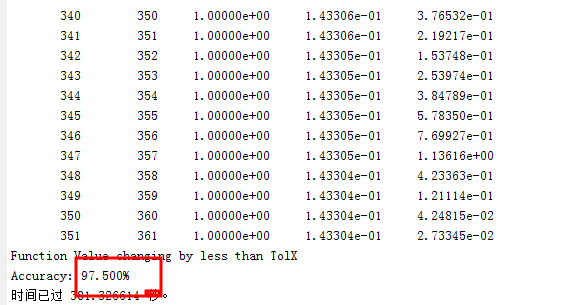

卷积深度置信网络工具箱的使用---人脸识别
本文主要以ORL_64x64人脸数据库识别为例，介绍如何使用基于matlab的CDBN工具箱。至于卷积深度置信网络（CDBN，Convolutional Deep Belief Network）的理论知识，只给出笔者整理的一些学习资源。
卷积深度置信网络理论知识
参考以下学习资料
- CSDN博客—受限玻尔兹曼机（RBM）学习笔记
- CSDN博客—深度信念网络(Deep Belief Network)
- 知乎—卷积神经网络工作原理直观的解释
- 量子位公众号—一文了解各种卷积结构原理及优劣
- 中国知网博硕论文—基于卷积深度置信网络的歌手识别
- CDBN paper（全英）
CDBN工具箱简介
据笔者了解，目前，比较流行的深度学习框架，如TensorFlow、DeepLearning4j等不支持CDBN。GitHub上有基于Matlab的CDBN工具箱： CDBN工具箱下载链接 下面简要介绍该工具箱。 从GitHub上下载的压缩包解压后再打开，文件目录如下：
 其中，最为重要的肯定是toolbox。toolbox里面有三个lib,分别是CDBN，DBN，Softmax库。本文将用到CDBN和Softmax两个库。
 需要注意的是，由于这个工具箱不是官方版的，因此可能存在某些bug，后面会涉及到笔者使用工具箱过程中的一些经验。
神经网络结构
介绍一下本文搭建的进行人脸识别的卷积深度置信网络的结构。
-
主体结构：两个卷积受限玻尔兹曼机（CRBM，Convolutional Restricted Boltzmann Machine）堆叠（每个CRBM后都接有池化层），顶层采用Softmax，实现分类。
-
第一个CRBM：
- 第二个CRBM：
-
Softmax层 神经元个数40个，最大迭代次数maxIter=1000，代价函数为交叉熵代价函数（Cross-Entropy Error）
-
其他参数 其他诸如学习速率等的参数使用CDBN-master\toolbox\CDBNLIB\default_layer2D.m中的默认值。
编程
以下讲解编程步骤。
-
步骤一：安装工具箱 只需运行setup_toolbox.m即可。 安装工具箱其实只是把用到的一些函数添加到matlab的搜索路径，因此你完全可以把工具箱内所有的文件都复制到你当前的路径下，不过肯定麻烦啦！
-
步骤二：加载和矩阵化数据
%load data
dataFortrain=load('ORL_64x64\StTrainFile1.txt');%注意修改路径
train_data=dataFortrain(:,1:end-1)';%训练样本
train_data=reshape(train_data,[64,64,1,360]);%矩阵化训练样本
trainL=dataFortrain(:,end);%训练样本标签
dataFortest=load('ORL_64x64\StTestFile1.txt');%注意修改路径
test_data=dataFortest(:,1:end-1)';%测试样本
test_data=reshape(test_data,[64,64,1,40]);%注意修改路径
testL=dataFortest(:,end);%测试样本标签
重点讲一下第四行。 StTrainFile1.txt中有360行，4097列。每一行是一幅人脸图像（像素为64X64=4096）的4096个灰度值，最后一列是该幅人脸图像的标签（1-40），表明其属于哪个人的（共40人，即分类数目为40）。由此可见，一幅二维图像（矩阵）被拉成了向量进行存储，因此在数据输入CDBN前，我们要对向量进行矩阵化，调用matlab的reshape方法，最终生成一个4维的矩阵，四个维度分别是64,64,1,360（样本数）。倒数第二行同理。
- 步骤三：定义层参数 工具箱把一层layer定义为一个struct对象。
%INITIALIZE THE PARAMETERS OF THE NETWORK
%first layer setting
layer{1} = default_layer2D();
layer{1}.inputdata=train_data;%输入训练样本
layer{1}.n_map_v=1;
layer{1}.n_map_h=9;
layer{1}.s_filter=[7 7];
layer{1}.stride=[1 1];
layer{1}.s_pool=[2 2];
layer{1}.batchsize=90;
layer{1}.n_epoch=1;
------------------------------------------------------------------------------------------------------------------------
%second layer setting
layer{2} = default_layer2D();
layer{2}.n_map_v=9;
layer{2}.n_map_h=16;
layer{2}.s_filter=[5 5];
layer{2}.stride=[1 1];
layer{2}.s_pool=[2 2];
layer{2}.batchsize=10;
layer{2}.n_epoch=1;
需要注意的是，**layer{i}=default_layer2D()这条语句是必须的，且必须位于所有层参数定义语句的最前面。**原因：如果layer{i}=default_layer2D()这条语句不位于最前面的话，在这条语句前面的参数赋值语句实质不起作用，这些参数还是取默认值。特别是对于第一层，因为default_layer2D()方法中是没有定义inputdata字段的，如果layer{1}.inputdata=train_data这条语句位于layer{1}=default_layer2D()前面，则会出现“使用未定义字段”的错误。 补充：要注意根据自己使用的数据集的情况设定层的输入类型，对[0,1]之间的数据集，应该使用二值神经网络，设定 layer{i}.type_input = ‘Binary’(程序默认);其他数据集，应该设为layer{i}.type_input = ‘Gaussian’;至于二者的区别，自行百度，这里不展开了。
- 步骤四：训练CDBN网络 这个过程是无监督学习，只需调用cdbn2D方法即可。
在调用cdbn2D方法之前，CDBN-master\toolbox\CDBNLIB\mex中的crbm_forward2D_batch_mex.c要先用mex命令编译生成crbm_forward2D_batch_mex.mexw64文件才能供matlab调用
mex crbm_forward2D_batch_mex.c
在编译前，crbm_forward2D_batch_mex.c要先修改：128行的out_id要改成在最开始的位置定义，否则编译时会出现“缺少：在类型前面’”的报错信息（PS:第一次遇到这么奇葩的报错，当时怀疑C语言是不是白学了），原因：VS2010的C编译器只支持C89标准，对C99标准支持不完全，而在C89标准中，变量需要放到函数体的前面声明，先声明再使用。
%% ----------- GO TO 2D CONVOLUTIONAL DEEP BELIEF NETWORKS ------------------%%
tic;
[model,layer] = cdbn2D(layer);
save('model_parameter','model','layer');
toc;
trainD = model{1}.output;%训练样本的第一个CRBM的输出，是一个4维矩阵
trainD1 = model{2}.output;%训练样本的第二个CRBM的输出，是一个4维矩阵
我们来比较一下train_data、trainD、trainD1的大小
 现在再看看卷积神经网络的图示，是不是很好理解了呢？

- 步骤五：将测试样本输入训练好的CDBN网络，提取高维特征
这段代码可以直接copy，修改好变量名即可！
%% ------------ TESTDATA FORWARD MODEL WITH THE PARAMETERS ------------------ %%
% FORWARD MODEL OF NETWORKS
H = length(layer);
layer{1}.inputdata = test_data;
fprintf('output the testdata features:>>...\n');
tic;
if H >= 2
% PREPROCESSS INPUTDATA TO BE SUITABLE FOR TRAIN
layer{1} = preprocess_train_data2D(layer{1});
model{1}.output = crbm_forward2D_batch_mex(model{1},layer{1},layer{1}.inputdata);
for i = 2:H
layer{i}.inputdata = model{i-1}.output;
layer{i} = preprocess_train_data2D(layer{i});
model{i}.output = crbm_forward2D_batch_mex(model{i},layer{i},layer{i}.inputdata);
end
else
layer{1} = preprocess_train_data2D(layer{1});
model{1}.output = crbm_forward2D_batch_mex(model{1},layer{1},layer{1}.inputdata);
end
testD = model{1}.output;%训练样本的第一个CRBM的输出，是一个4维矩阵
testD1 = model{2}.output;%训练样本的第二个CRBM的输出，是一个4维矩阵
toc;
同样的，我们来看一下test_data、testD、testD1的大小：

- 步骤六：训练Softmax分类器，同时进行识别 这里我们用到 softmaxExercise(inputData,labels,inputData_t,labels_t)这个函数 参数说明： **- inputdata:**训练样本的CDBN输出，要求是二维矩阵 **-labels:**训练样本的标签 **-inputData_t:**测试样本的CDBN输出，要求是二维矩阵 **-labels_t:**测试样本的标签 由于CDBN的输出是4维矩阵，因此在训练Softmax分类器前，需要把矩阵拉成向量（和之前的过程相反）。代码如下，可直接copy，修改变量名即可！
%% ------------------------------- Softmax ---------------------------------- %%
fprintf('train the softmax:>>...\n');
tic;
% TRANSLATE THE OUTPUT TO ONE VECTOR
trainDa = [];
trainLa=trainL;
for i= 1:size(trainD,4)
a1 = [];
a2 = [];
a3 = [];
for j = 1:size(trainD,3)
a1 = [a1;reshape(trainD(:,:,j,i),size(trainD,2)*size(trainD,1),1)];
end
for j = 1:size(trainD1,3)
a2 = [a2;reshape(trainD1(:,:,j,i),size(trainD1,2)*size(trainD1,1),1)];
end
a3 = [a3;a1;a2];
trainDa = [trainDa,a3];
end
testDa = [];
testLa=testL;
for i= 1:size(testD,4)
b1 = [];
b2 = [];
b3 = [];
for j = 1:size(testD,3)
b1 = [b1;reshape(testD(:,:,j,i),size(testD,2)*size(testD,1),1)];
end
for j =1:size(testD1,3)
b2 = [b2;reshape(testD1(:,:,j,i),size(testD1,2)*size(testD1,1),1)];
end
b3 = [b3;b1;b2];
testDa = [testDa,b3];
end
我们来看一下拉成向量后的trainDa以及testDa的大小

对比一下，train_data和test_data在矩阵化之前的大小：

可见，CDBN作为特征提取器，将4096维特征映射到了9873维特征，提高了Softmax的分类能力！
softmaxExercise.m中有这样一段注释：
 因此在调用softmaxExercise方法前，要做以下4个工作：
因此在调用softmaxExercise方法前，要做以下4个工作：
- 修改softmaxExercise.m第22行的numClasses，如本文改为40
- 修改softmaxExercise.m第96行的maxIter，本文取1000
PS:个人觉得softmaxExercise方法应该增加两个入口参数，即numClasses和maxIter，如此才能更好体现封装的思想。
-
softmaxCost.m中定义需要的损失函数，只需要改第90行
cost = -(1. / numCases) * sum(sum(groundTruth .* log(p))) + (lambda / 2.) * sum(sum(theta.^2)); 这条语句即可，原文件使用的是交叉熵代价函数。
-
有必要的话可以修改 softmaxPredict.m中内容，个人觉得完全没必要，保留即可。
最后调用softmaxExercise方法
softmaxExercise(trainDa,trainLa,testDa,testLa);
toc;
完整代码
FaceRecognitionDemo.m
clear;
%load data
dataFortrain=load('ORL_64x64\StTrainFile1.txt');
train_data=dataFortrain(:,1:end-1)';
train_data=reshape(train_data,[64,64,1,360]);
trainL=dataFortrain(:,end);
dataFortest=load('ORL_64x64\StTestFile1.txt');
test_data=dataFortest(:,1:end-1)';
test_data=reshape(test_data,[64,64,1,40]);
testL=dataFortest(:,end);
%INITIALIZE THE PARAMETERS OF THE NETWORK
%first layer setting
layer{1} = default_layer2D();
layer{1}.inputdata=train_data;
layer{1}.n_map_v=1;
layer{1}.n_map_h=9;
layer{1}.s_filter=[7 7];
layer{1}.stride=[1 1];
layer{1}.s_pool=[2 2];
layer{1}.batchsize=90;
layer{1}.n_epoch=1;
%second layer setting
layer{2} = default_layer2D();
layer{2}.n_map_v=9;
layer{2}.n_map_h=16;
layer{2}.s_filter=[5 5];
layer{2}.stride=[1 1];
layer{2}.s_pool=[2 2];
layer{2}.batchsize=10;
layer{2}.n_epoch=1;
%% ----------- GO TO 2D CONVOLUTIONAL DEEP BELIEF NETWORKS ------------------ %%
tic;
[model,layer] = cdbn2D(layer);
save('model_parameter','model','layer');
toc;
trainD = model{1}.output;
trainD1 = model{2}.output;
%% ------------ TESTDATA FORWARD MODEL WITH THE PARAMETERS ------------------ %%
% FORWARD MODEL OF NETWORKS
H = length(layer);
layer{1}.inputdata = test_data;
fprintf('output the testdata features:>>...\n');
tic;
if H >= 2
% PREPROCESSS INPUTDATA TO BE SUITABLE FOR TRAIN
layer{1} = preprocess_train_data2D(layer{1});
model{1}.output = crbm_forward2D_batch_mex(model{1},layer{1},layer{1}.inputdata);
for i = 2:H
layer{i}.inputdata = model{i-1}.output;
layer{i} = preprocess_train_data2D(layer{i});
model{i}.output = crbm_forward2D_batch_mex(model{i},layer{i},layer{i}.inputdata);
end
else
layer{1} = preprocess_train_data2D(layer{1});
model{1}.output = crbm_forward2D_batch_mex(model{1},layer{1},layer{1}.inputdata);
end
testD = model{1}.output;
testD1 = model{2}.output;
toc;
%% ------------------------------- Softmax ---------------------------------- %%
fprintf('train the softmax:>>...\n');
tic;
% TRANSLATE THE OUTPUT TO ONE VECTOR
trainDa = [];
trainLa=trainL;
for i= 1:size(trainD,4)
a1 = [];
a2 = [];
a3 = [];
for j = 1:size(trainD,3)
a1 = [a1;reshape(trainD(:,:,j,i),size(trainD,2)*size(trainD,1),1)];
end
for j = 1:size(trainD1,3)
a2 = [a2;reshape(trainD1(:,:,j,i),size(trainD1,2)*size(trainD1,1),1)];
end
a3 = [a3;a1;a2];
trainDa = [trainDa,a3];
end
testDa = [];
testLa=testL;
for i= 1:size(testD,4)
b1 = [];
b2 = [];
b3 = [];
for j = 1:size(testD,3)
b1 = [b1;reshape(testD(:,:,j,i),size(testD,2)*size(testD,1),1)];
end
for j =1:size(testD1,3)
b2 = [b2;reshape(testD1(:,:,j,i),size(testD1,2)*size(testD1,1),1)];
end
b3 = [b3;b1;b2];
testDa = [testDa,b3];
end
softmaxExercise(trainDa,trainLa,testDa,testLa);
toc;
运行截图及准确率



97.5%的识别率，还是可以接受的，一方面是数据集好，另一方面是搭建得网络好。 读者可以试一试调整CDBN网络的参数，比如增大epoch（本文取1），看能否获得更高的识别率。 为了方便读者研究，附上所有文件。
本Demo文件汇总下载链接（原链接失效，此为新版连接）,提取码：7f6i
以下是使用此工具箱的几点提示：
- 原始工具箱只在LINUX系统测试过，由于LINUX系统和WINDOWS系统的文件分隔符不同， 因此DemoCDBN_Binary_2D.m的第83行、 cdbn2D.m的第15、24行、 setup_toolbox.m的文件分隔符要修改。
- 源程序存在bug，即若样本个数不是batchsize的整数倍的话，会出错，因此在此bug排除前，应将batchsize设置为样本数目的因数
- 类别标签不要用负数或0，比如进行二分类，标签不要设为-1和1，可以设为1和2，这是因为softmaxCost.m文件中的第18行建立稀疏矩阵时会以标签作为矩阵的索引，如果设为0或负数，肯定会报错：矩阵索引必须为正数